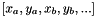

|
ROB 314
|
Grégoire Roussel
11 mars 2019
L'objectif du projet est de construire et valider expérimentalement un système de surveillance d'une zone impliquant plusieurs drones coordonnés. Les besoins identifiés pour le système sont :
L'accent a été mis, non pas sur le développement d'un bloc scientifiquement innovant, mais sur la conception d'un système fonctionnel dans son ensemble, et qui me permette d'approfondir des problèmes récurrents d'un projet informatique complexe:
Et des thématiques fréquentes de la programmation robotique :
Dans l'expérience, les drones de surveillances sont des Crazyflie (bitcraze, https://www.bitcraze.io/crazyflie-2/). Ce sont des petits quadri-coptères très légers (environ 40g) contrôlables via radio par un ordinateur central.
Cette base centrale exécute le méta-OS ROS: http://www.ros.org/ . Ce méta-OS, couramment utilisée lors du prototypage de robots facilite l'interaction entre processus et la conception de blocs fonctionnels modulaires et réutilisables. Elle fournit par ailleurs des outils de développement, de diagnostics et de visualisation qui simplifient la conception d'un système robotique. Dans ce projet, les outils RVIZ (outil de visualisation générique) et Gazebo (moteur de simulation) sont beaucoup utilisés.

Outre leur disponibilité au laboratoire, le choix des Crazyflie se justifie par leur faible coût et leur grande robustesse aux chocs. Par ailleurs, la communauté ROS met à disposition des drivers et un programme de simulation aux interfaces similaires. Ainsi, le projet peut indépendamment contrôler des drones simulés ou réels, ou même une combinaison des deux.
La salle d'expérimentation cyber-physique du LIX contient une dizaine de drone Crazyflie, et un dispositif de localisation externe: le Loco Positioning System. Chaque Crazyflie se positionne dans l'espace en comparant les délais de transmissions avec de multiples balises radio, en quelque sorte comme un GPS d'intérieur. La précision de ce système est de l'ordre de la dizaine de centimètres, avec une incertitude principalement sur l'altitude.
Le projet s'appuie sur deux stacks (ensembles de packages ROS) externes:
[Wolfgang Hoenig - whoenig], https://github.com/whoenig/crazyflie_ros. Licence M.I.T.
driver entre ROS et le protocole de communication crazyflie (CRTP: Crazyflie Real-Time Protocol). Fournit un serveur de commande auquel on peut connecter des crazyflies (réels ou virtuels). Pour chaque crazyflie sont rendus disponibles des services pour le contrôler, et les logs sous la formes de topics.
Il fournit par ailleurs un modèle visuel 3D de Crazyflie pour Gazebo.
[Franck Djeumou - wuwushrek], https://github.com/wuwushrek/sim_cf.
Module de simulation pour Crazyflie. Reçoit les commandes CRTP comme un drone réel, et simule la réponse logicielle, puis dynamique, par Gazebo. Le programme peut fonctionner en mode SITL (Software in the Loop : le logiciel du Crazyflie est simulé intégralement) ou HITL (Hardware in the Loop: un crazyflie réel est impliqué, mais ses réponses commandent des moteurs virtuels).
J'ai travaillé à la migration de ce package sous ROS Melodic (il y a une mise à jour majeure de l'API de Gazebo entre Kinetic et Melodic - il fallait reprendre une partie du code des plugins Gazebo). A cours de l'année, j'ai aussi amélioré quelques fonctionnalités annexes (scripts de lancement et de configuration).
Le diagramme ci-dessous illustre les relations et échanges entre les différents outils externes impliqués et le module sp du projet:
Une courte (et imparfaite) analogie avec le fonctionnement d'un bateau (ancien) permet d'introduire les nodes impliqués dans le fonctionnement de sp.
Outre son rôle de contrôle, le second est souvent chargé du rôle d'organisation des équipes de travail. Dans notre système, ce sera lui qui sera chargé de décoller et atterir les drones en fonction des besoins et des pannes pour maintenir la capacité opérationnelle demandée.
Pour faciliter le travail de la planification, on introduit l'abstraction d'identifiant de drone actif, pour désigner un drone disponible pour accomplir des missions de surveillance, sans plus de précisions sur son identité. Par opposition, chaque drone du système, réel ou simulé, possède un unique identifiant de drone connecté fixé.
Exemple : dans l'image ci-dessous, les identifiants connectés sont [1,2,3,4,5], et il y trois drones actifs, identifiés par [A, B, C] . Pour l'instant, l'allocation des ressources est la suivante:
Dans le cas où le drone 4 rencontre une défaillance et doit atterir, c'est le rôle du second de faire décoller un autre drone, disons #4, pour maintenir la capacité opérationnelle à trois drones actifs. In fine:
Le node sp_admiral gère et optimise la surveillance à long terme de la zone. Il fonctionne par "périodes d'observation" (de durée réglable, de l'ordre d'une dizaine de secondes), et donne à chaque début de période des objectifs à surveiller par les drones actifs.
Il maintient une grid map des zones visitées avec un score pour chaque cellule libre de la carte. Le score croît avec le temps, et est remis à zéro quand un drone le drone observe la cellule à la fin de la période. Les ordres de l'amiral sont issus d'une optimisation de l'état du système  du système par une méthode de recuit simulé.
Pour ceci,
Sur l'image ci-dessus, on peut observer:
Le capitaine élabore et complète les ordres donnés par l'amiral. À partir de la liste des positions, il calcule:
L'algorithme utilisé est un RRT* multi-agent, avec la variante que l'association départ-arrivée n'est pas donnée. L'algorithme construit ainsi pour chaque point de départ un arbre vers chaque destination. Après un nombre déterminé d'étapes, il cherche l'assignation qui minimise le coût global du déplacement (maximum des distances à parcourir pour chaque drone).
Sur l'image ci-dessus, on observe:
L'allocation est le processus de sélection des drones actifs. Étant donné un objectif de N drones actifs, le second fait décoller ou atterir le nombre adapté de drones. Il surveille leur état pendant ces manoeuvres, et informe le reste du système :
Le node de contrôle se charge de guider les drones actifs sur le chemin défini par le Capitaine. Il détecte aussi les menaces de collisions et interromp les trajectoires le cas échéant.
Une première méthode naïve, consistant à arrêter deux drones s'ils s'approchaient trop près l'un de l'autre. Cela conduit cependant à une immobilisation définitive des drones. Pour résoudre ce problème, on introduit une notion de priorité entre les trajectoire: les drones moins prioritaires doivent s'arrêter pour laisser passer les autres en cas de menace de collision.
Explication du scénario : On suppose ici que les drones 1, 2, 3 sont chargés de missions de priorités décroissantes.